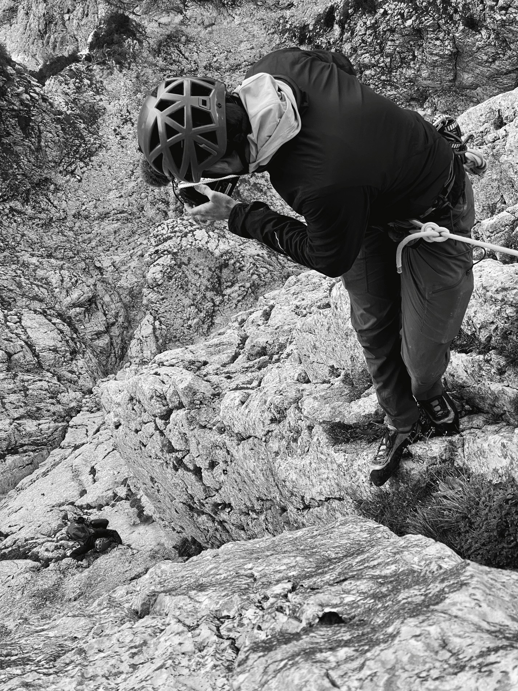
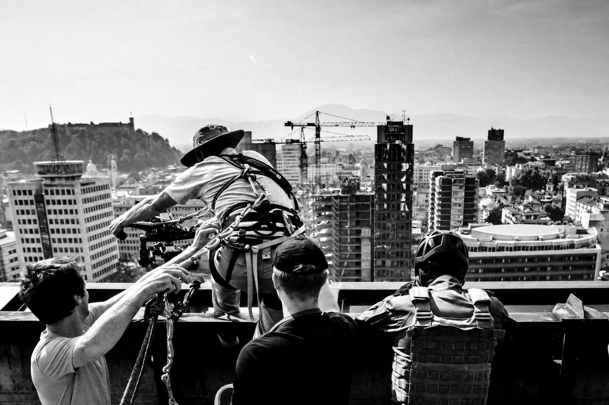

The 360 Ascent
A demanding climbing film project built around exposure, movement, and very complex logistics.
Red Bull / 2021
Cinematography, production
103 Film
Focused on cinematography and production in environments where terrain is not simply a backdrop, but part of the challenge.
Discuss a film collaboration
What I offer
Production value
My work is rooted in demanding terrain: mountain environments in all seasons, rope access filming, filming while skiing, and locations where exposure, movement, and logistics directly affect what is possible.
What I bring is not only camera operation. I also bring field judgment and practical production support when access, timing, and conditions become more complex.
I work best on projects where the field component matters and where a production benefits from someone who understands both the visual task and the realities of operating in difficult environments.

Selected clients and work
Projects include work such as Red Bull 360 Ascent and the Head and Elan ski collections. Clients include Red Bull, National Geographic, Discovery Channel, Google, Adidas, Eurosport, and BBC.
Selected references
A demanding climbing film project built around exposure, movement, and very complex logistics.
Red Bull / 2021
Cinematography, production
A fast-moving mountain objective shaped by endurance, terrain, weather, and precise timing.
Red Bull / 2020
Cinematography, production
A commercial ski production for a new ski line, shaped around precise movement, controlled mountain conditions, and product-led visual clarity.
HEAD / 2019
Cinematography, production
A freerunning project combining movement, unusual locations, and controlled visual execution.
Red Bull / 2020
Cinematography
A film shaped around mountain professionalism, responsibility, and the quiet precision of guide work.
Slovenian Mountain Guide Association / 2021
Cinematography, production
A hospitality film connecting mountain atmosphere, intimacy, and a softer emotional tone.
Sunrose 7 Hotel / 2022
Cinematography, production
A climbing-focused production built around athletic precision, ambition and execution.
Red Bull / 2025
Cinematography
A reflective outdoor film shaped around personal perspective, craft, and time spent in nature.
What Happened Outdoors / 2025
Cinematography, production
For productions that need more than technical operation: field judgment, terrain competence, and a reliable presence under demanding conditions.
Discuss a film collaboration